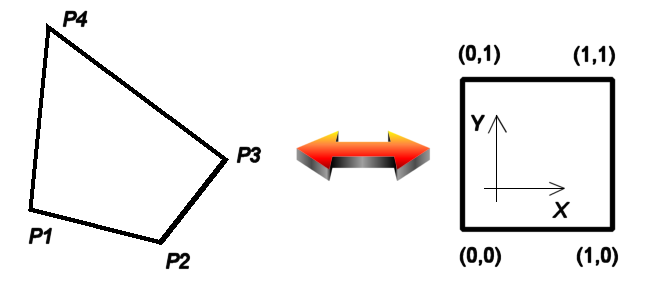

Package org.sm.smtools.math.quadmapping
Class QuadMapping
java.lang.Object
org.sm.smtools.math.quadmapping.QuadMapping
public final class QuadMapping
extends java.lang.Object
The
QuadMapping class provides a perspective mapping for a convex quadrilateral.
This class maps 2D-data points between a convex quadrilateral and a normalised square:

Note: it is assumed that the X axis points to the right and the Y axis points upwards.
Note that this class cannot be subclassed!
- Version:
- 09/12/2004
- Author:
- Sven Maerivoet
- See Also:
Quadrilateral,QuadToQuadMapping
-
Constructor Summary
Constructors Constructor Description QuadMapping(Quadrilateral q)Constructs aQuadMappingobject based on the perspective mapping of the specified quadrilateral. -
Method Summary
Modifier and Type Method Description java.awt.geom.Point2D.DoublemapQuadrilateralToSquare(double x, double y)Inversely maps a 2D-data point in the quadrilateral to a 2D-data point in the normalised square.java.awt.geom.Point2D.DoublemapQuadrilateralToSquare(java.awt.geom.Point2D.Double p)Inversely maps a 2D-data point in the quadrilateral to a 2D-data point in the normalised square.java.awt.geom.Point2D.DoublemapSquareToQuadrilateral(double u, double v)Maps a 2D-data point in the normalised square to a 2D-data point in the quadrilateral.java.awt.geom.Point2D.DoublemapSquareToQuadrilateral(java.awt.geom.Point2D.Double p)Maps a 2D-data point in the normalised square to a 2D-data point in the quadrilateral.voidsetQuadrilateral(Quadrilateral q)Calculates the perspective mapping of the specified quadrilateral.Methods inherited from class java.lang.Object
clone, equals, getClass, hashCode, notify, notifyAll, toString, wait, wait, wait
-
Constructor Details
-
QuadMapping
Constructs aQuadMappingobject based on the perspective mapping of the specified quadrilateral.- Parameters:
q- the quadrilateral to use for the perspective mapping- See Also:
setQuadrilateral(Quadrilateral)
-
-
Method Details
-
setQuadrilateral
Calculates the perspective mapping of the specified quadrilateral.- Parameters:
q- the quadrilateral to use for the perspective mapping
-
mapSquareToQuadrilateral
public java.awt.geom.Point2D.Double mapSquareToQuadrilateral(java.awt.geom.Point2D.Double p)Maps a 2D-data point in the normalised square to a 2D-data point in the quadrilateral.- Parameters:
p- the 2D-data point in the normalised square to map- Returns:
- the corresponding 2D-data point in the quadrilateral
- See Also:
mapSquareToQuadrilateral(double,double)
-
mapSquareToQuadrilateral
public java.awt.geom.Point2D.Double mapSquareToQuadrilateral(double u, double v)Maps a 2D-data point in the normalised square to a 2D-data point in the quadrilateral.- Parameters:
u- the x coordinate of the 2D-data point in the normalised square to mapv- the y coordinate of the 2D-data point in the normalised square to map- Returns:
- the corresponding 2D-data point in the quadrilateral
- See Also:
mapSquareToQuadrilateral(Point2D.Double)
-
mapQuadrilateralToSquare
public java.awt.geom.Point2D.Double mapQuadrilateralToSquare(java.awt.geom.Point2D.Double p)Inversely maps a 2D-data point in the quadrilateral to a 2D-data point in the normalised square.- Parameters:
p- the 2D-data point in the quadrilateral to map inversely- Returns:
- the corresponding 2D-data point in the normalised square
- See Also:
mapQuadrilateralToSquare(double,double)
-
mapQuadrilateralToSquare
public java.awt.geom.Point2D.Double mapQuadrilateralToSquare(double x, double y)Inversely maps a 2D-data point in the quadrilateral to a 2D-data point in the normalised square.- Parameters:
x- the x coordinate of the 2D-data point in the quadrilateral to map inverselyy- the y coordinate of the 2D-data point in the quadrilateral to map inversely- Returns:
- the corresponding 2D-data point in the normalised square
- See Also:
mapQuadrilateralToSquare(Point2D.Double)
-